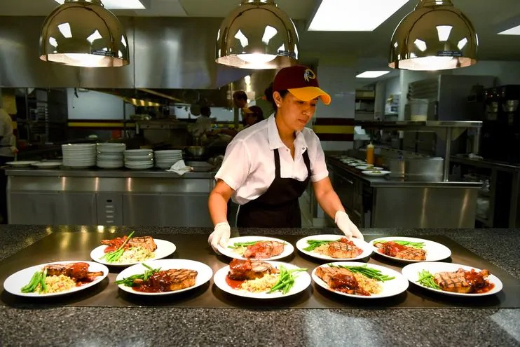
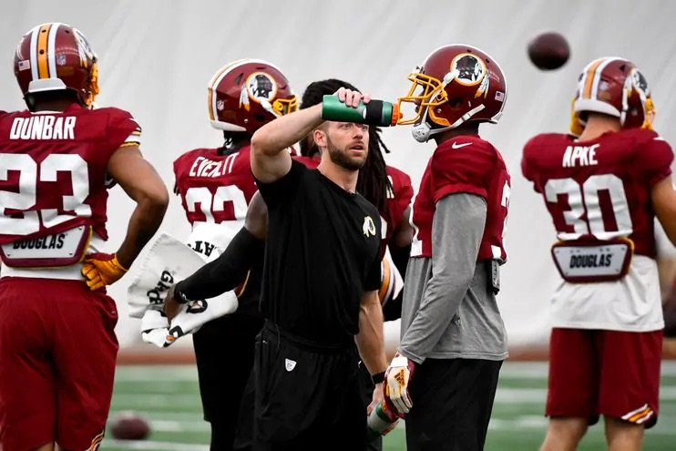
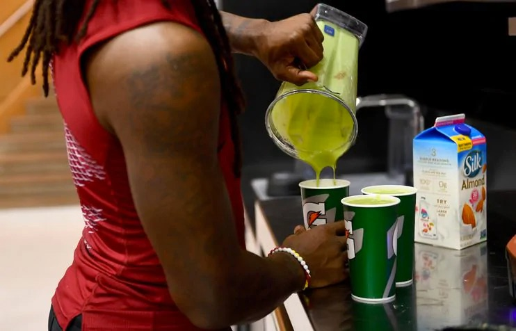
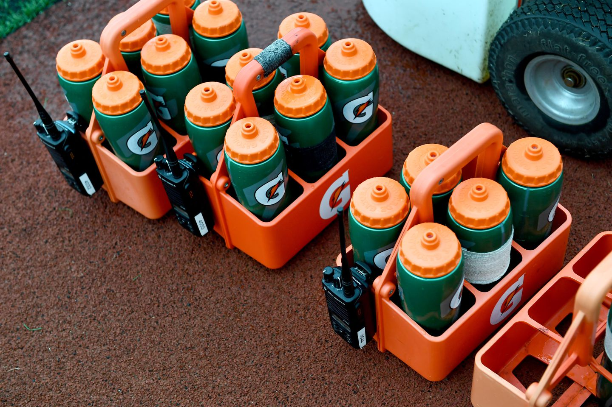
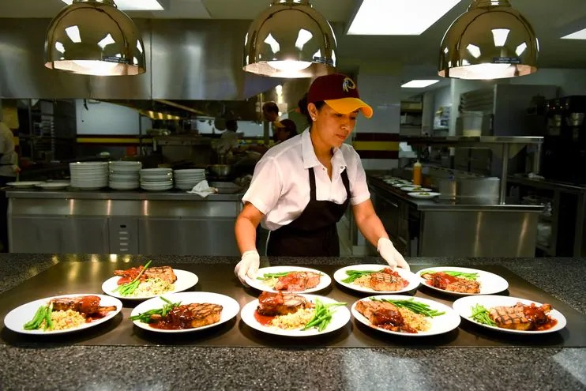
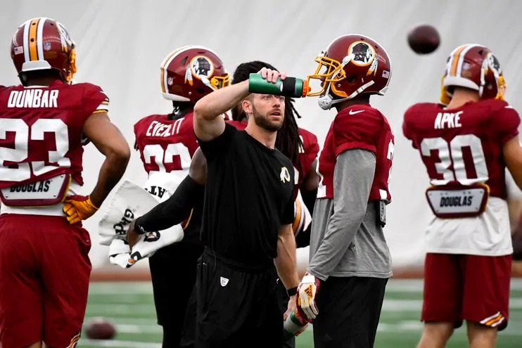
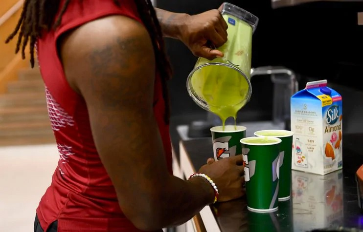
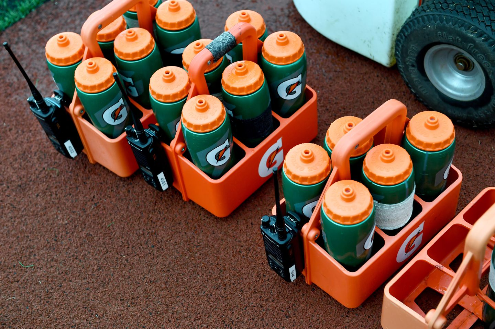

Through the weight room and down a flight of stairs, a cohort of hungry football players trudged into the Redskins Park cafeteria on a Tuesday in late August to the sound of clinking pots and sizzling pans.
Jake Sankal, an assistant strength and conditioning coach for the Washington Redskins who doubles as the team's director of sports nutrition, an increasingly prevalent position in the NFL, works with chef Connor McGuire to pick out menu options for the week. It's just one of Sankal's tasks when it comes to completing his main objective: feeding an entire NFL team while keeping the players in top shape before and throughout the season.
"What we try to do more than just being the food police is provide them healthy options," Sankal said. "We focus a ton on quality food here. That's really the biggest thing we do. And then we try to educate them."
Sankal's job consists of constantly thinking about hydration levels, snacks, proteins, carbohydrates, body composition and meal prep — all of which are part of the dietitian revolution sweeping college and professional football.
In 2007, 13 NCAA institutions and one NFL team — the New England Patriots — had a full-time sports dietitian, said Chelsea Burkart, president of the Collegiate and Professional Sports Dietitians Association. Now 84 colleges and 20 NFL teams, including the Redskins, have one.
Sankal has seen an increased interest in nutrition from players since he started talking about it as a strength and conditioning intern in the Cleveland Indians' minor league system in 2010. He talks with players about nutrition strategies and diets they see on Twitter, Instagram or Netflix documentaries, and uses the conversation as an access point to talk about best practices outside nutrition that can help them.
"There's a certain level of proprietary stuff that they do, but the majority of it is all fundamental good nutrition," Sankal said. "I think you'll see more similarities than not between teams."
Like other NFL teams, the Redskins create specialized meal plans for players based on their body composition, and align them with the team's practice schedule.
The average food intake for an NFL player varies based on the size and position of each, but the average player on the Redskins this season consumes about 4,000 calories per day. Some players consume as many as 6,000 calories, while others go as low as 3,000 calories.